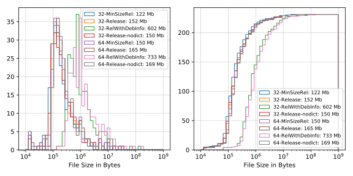
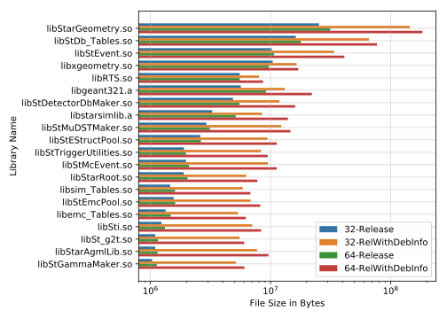
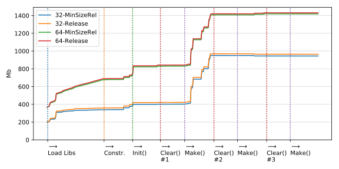
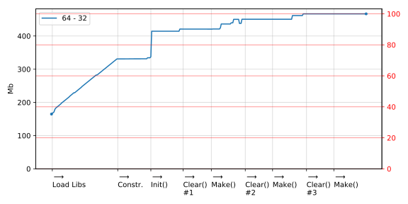
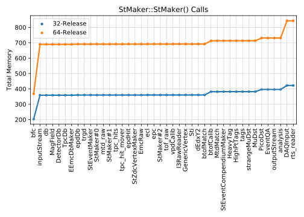
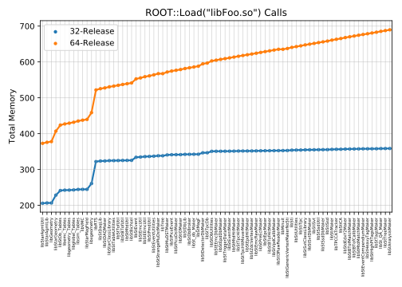
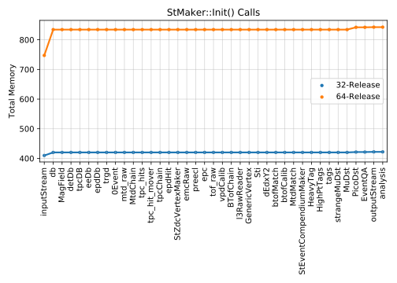
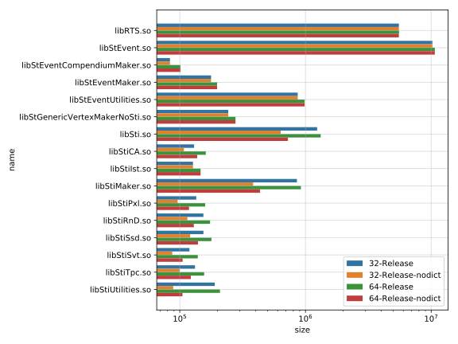
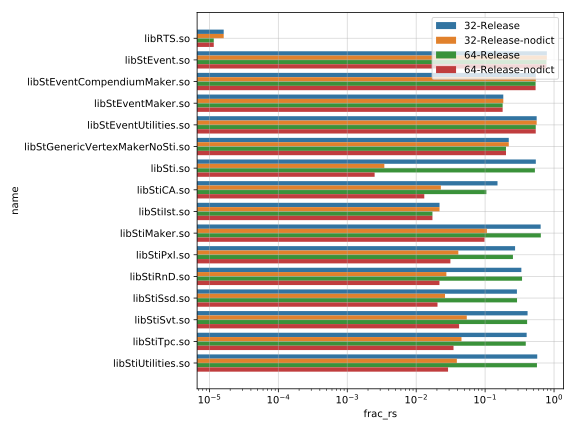
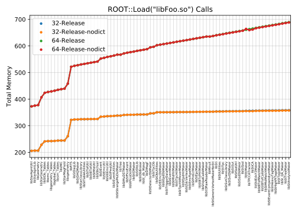

STAR Software Library:
32-bit vs 64-bit Builds
Memory Usage by Reconstruction Chain
Dmitri Smirnov
Updated
<h1>Introduction and Motivation</h1> - This study is motivated by increase in memory usage for 64-bit builds as reported by nightly tests - Expectated increase due to change in data model from **ILP32** to **LP64** on Unix-like systems - **ILP32** or **4/4/4**: int, long, and pointer are 32-bit - **LP64** or **4/8/8**: int is 32-bit, long and pointer are 64-bit - Observe increase about 50% in the total virtual memory for the same reconstruction chain - It is not clear whether this increase causes any inefficiency in running event reconstruction on multicore machines - Nevertheless, it is worth checking and have it under control if possible
<h1>STAR Library Sizes</h1> - Investigate predefined build types in CMake - `CMAKE_BUILD_TYPE=Release` (i.e. `-O2 -DNDEBUG`) - `CMAKE_BUILD_TYPE=RelWithDebInfo` (i.e. `-O2 -g -DNDEBUG`) - `CMAKE_BUILD_TYPE=MinSizeRel` (i.e. `-Os -DNDEBUG`) - First, compare library sizes for 32- and 64-bit builds 
<h1>STAR Library Sizes: Top 20</h1> 
<h1>Memory Usage Dignostics</h1> - We monitor changes in memory used by reconstruction chains. This is done by means of 1. Calls to `stlib`'s `mallinfo()` to obtain allocated memory in the heap 2. Queries to `/proc/<PID>/status` to obtain the total virtual memory used by the process <span style="font-size: 80%"> - Use diagnostics provided by `StarRoot/StMemStat` - Specific to STAR soft: Set environment variable `StarEndMakerShell` </span>
<h1>StMemStat</h1>  - We run a test job reconstructing three events - `-Os` compiler flag only marginally reduces the memory footprint
<h1>StMemStat: 64 vs 32 Difference</h1>  - Observe difference before first measurement. ROOT + other dependencies (e.g. cxx4log, ...) + few STAR libraries? - Mapped libraries maybe responsible for upto 70% of overall difference
<h1>StMemStat: Constructors</h1>  - Ignore the last two points as those calls are made directly rather than by the framework
<h1>StMemStat: Loads</h1>  - Weak dependence on library size? - RTS has not been looked at in details
<h1>StMemStat: Init</h1> 
<h1>Statistical Analysis of ELF Files</h1> <div style="width: 70%; float:left">  </div> <div style="width: 30%; float:right"> - It is noted that a significant fraction of symbols (both objects and functions) is generated by `rootcint` - We disabled `rootcint` processing for `Sti` libraries - The library file size does increase significantly </div>
<h1>Statistical Analysis of ELF Files</h1> <div style="width: 70%; float:left">  </div> <div style="width: 30%; float:right"> - It is noted that a significant fraction of symbols (both objects and functions) is generated by `rootcint` - We disabled `rootcint` processing for `Sti` libraries </div>
<h1>StMemStat: Loads with No Dictionaries (Sti)</h1>  - Effect on the memmory mapped part appears to be marginal
<h1>Summary</h1> - Investigates primary sources causing increase in the total memory - Recommendations - While does not seem to reduce the memory footprint it may still be beneficial to avoid ROOT dictionary generation by `rootcint` where unnecessary - Do not load unused libraries such as `Stv`, `Sst`, `Svt`, ... - It is still not clear if the observed increase in the total memory can cause any inefficiency in reconstruction jobs - We look at the total virtual memory, the residual memory can be significantly smaller